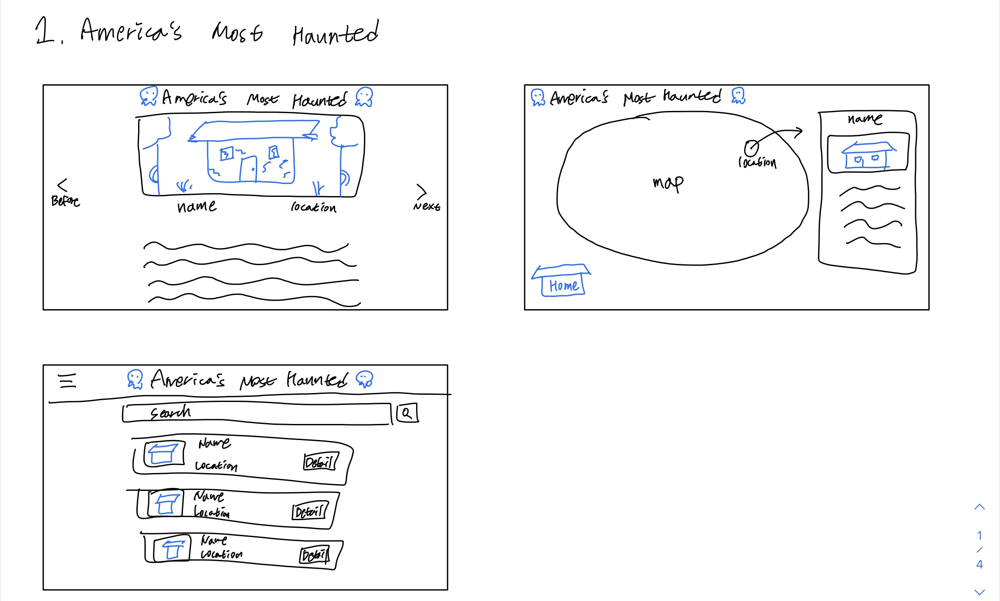
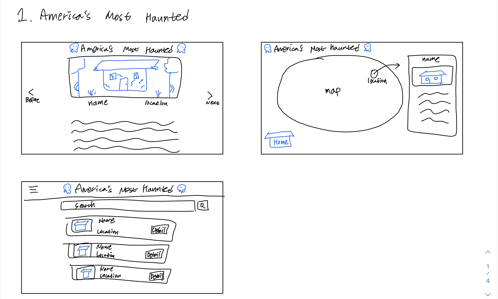

Final Project 2nd Draft Sketches
Challenge
It was difficult to give feedback to other friends.
Problems
There were no problems.
Results
Feedback: For the page that has the map, add some kind of button where the user can go back to the home page.
It was difficult to give feedback to other friends.
There were no problems.
Feedback: For the page that has the map, add some kind of button where the user can go back to the home page.
